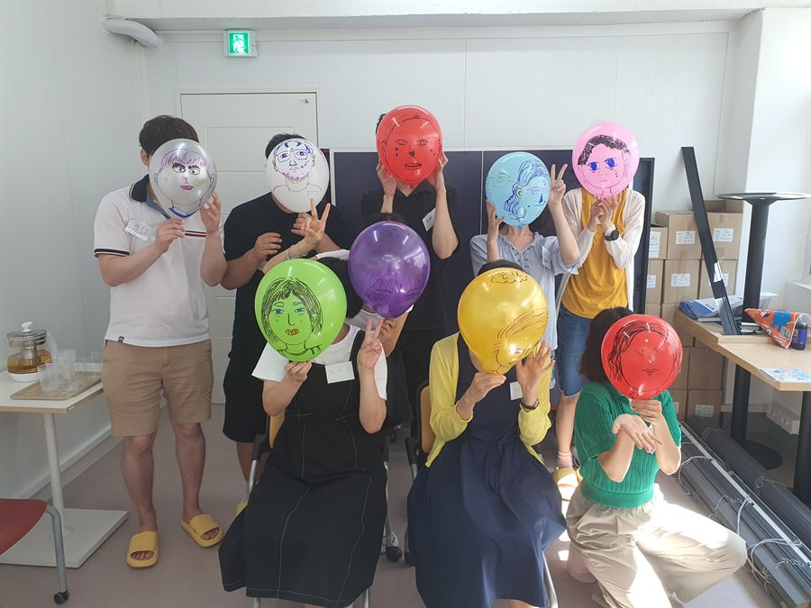
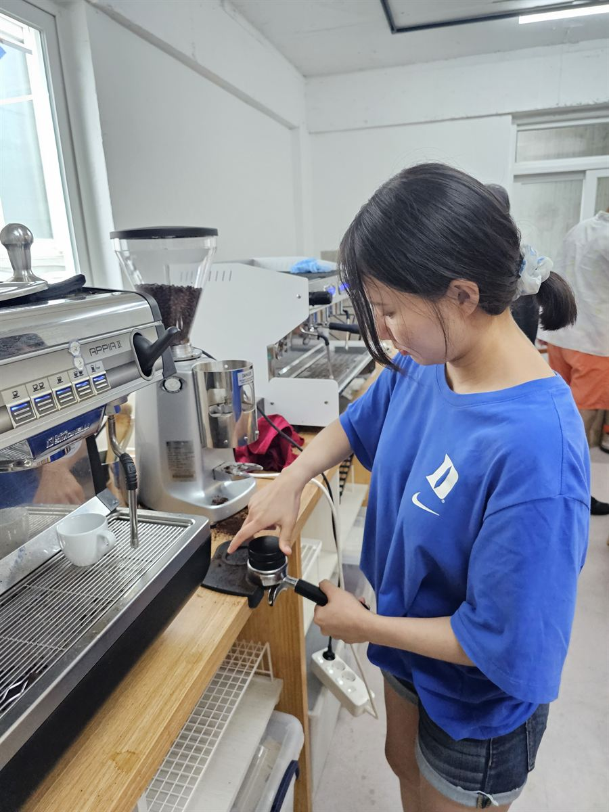
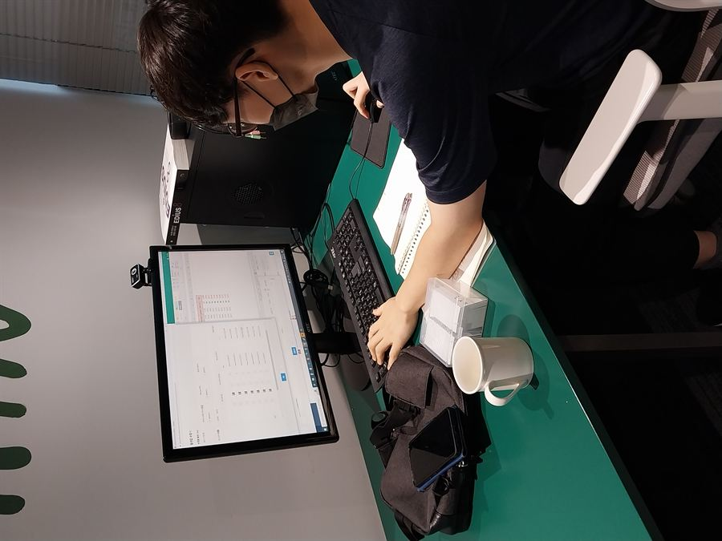
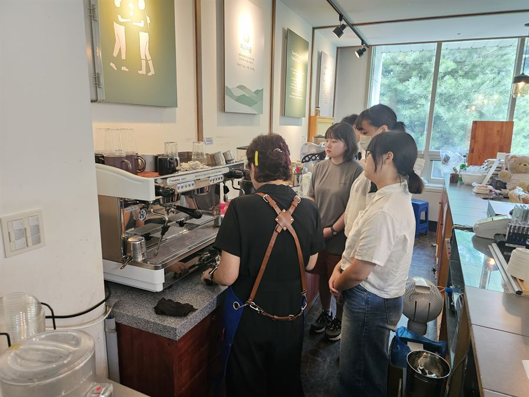
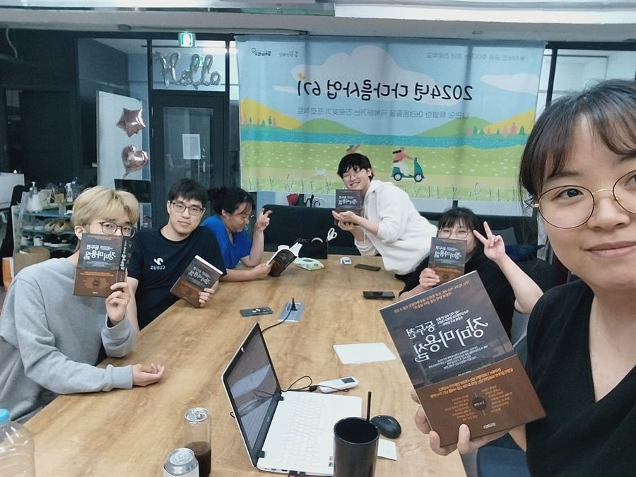
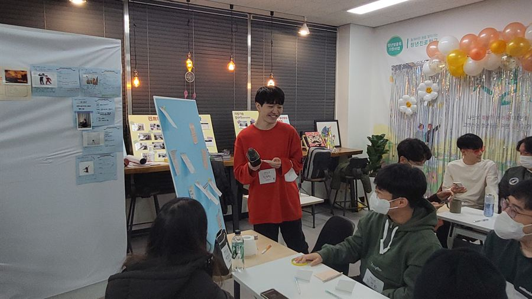

기댈 언덕
3~5년 이상 긴 시간을 함께하며, 청년이 혼자 해결하기 힘든 어려움을 겪을 때 언제나 의논하고 기댈 수 있는 든든한 지지관계를 맺습니다.
참여청년의 목소리
“처음 왔을 때는 작은 실패에도 무너져 내릴까봐 무서웠어요. ‘저는 못할 거 같아요’ 하는 말을 입에 달고 살았어요. 하지만 지금은 나를 존중할 수 있게 되었고, 인턴십도 몇 번 해냈고, 무엇보다 해보고 싶은 일들이 생겨났어요.”— 2022년 프로그램 참여자
13년간 밀착 지원한
위기·고립 청년
첫 취업 후
3개월 이상 지속
일경험을 함께 만든
협력 기업·사업장
한 청년과 함께하는
평균 동행 기간
2013~2025년 누적 기준 · 참여청년 512명 자체 조사
다양한 경제적·정서적 위기 속에서 부모나 가족의 도움 없이 자립해야 하는 만 19~34세 미자립 청년. 기존 제도는 위기청소년 지원에 집중되어 있고, 청년을 위한 지원은 단기 직업훈련과 취업 알선에 머무는 경우가 많습니다.
2023년 보건복지부 통계
2023년 교육부 통계 (중·고등학교 학업중단)
2023년 아동권리보장원 (최근 5년 아동복지시설 퇴소 및 퇴소 후 5년)
이 밖에도 대학 비진학 청년, 1인가구 청년, 가족돌봄 청년이 같은 어려움을 겪고 있습니다.
일하는학교는 청년 각자의 특성과 속도에 맞추어 일상 회복부터 진로탐색과 자립까지, 충분한 시간을 가지고 성장할 수 있도록 지원합니다. 누구에게나 공평한 시작의 기회와 충분한 성장의 과정, 그리고 일하며 꿈을 실현할 권리가 있기 때문입니다.
3~5년 이상 긴 시간을 함께하며, 청년이 혼자 해결하기 힘든 어려움을 겪을 때 언제나 의논하고 기댈 수 있는 든든한 지지관계를 맺습니다.
진로멘토, 지역사회 기업들과 협력하여 청년 각자의 특성과 목표에 맞는 성취경험과 성장의 기회를 만들어 갑니다.
차근차근 회복하고 진로를 찾고 취업과 자립을 준비할 수 있는 ‘자립이행 3단계 프로그램’을 운영합니다.
일상회복 → 진로탐색 → 취업준비를 거쳐 자립을 달성하기까지, 자신만의 속도로 성장해갈 수 있도록 운영합니다. 평균 3년 이상 진행되며, 자립준비가 중단되지 않도록 위기극복지원을 병행합니다.

멈춰 있던 일상에 다시 리듬을 만듭니다
“의욕이 떨어져서 집 밖으로 안 나간 지 오래되었어요”
“사람을 대하는 게 무섭고 힘들어요” · “내가 어떤 사람인지 모르겠어요”

해본 적 없는 일을 처음 경험해봅니다
“배우고 경험해 본 게 없어서 진로를 선택하기 어려워요”
“아무것도 잘하는 게 없는 것 같아요” · “뭐부터 시작해야 할지 막막해요”

일터에 정착하고 경력을 만들어 갑니다
“학력, 전공, 자격증 등 준비된 것이 아무것도 없어요”
“이력서를 써 본 적이 없어요” · “적응이 힘들어서 오래 일하지 못해요”
청년마다 처한 위기가 다릅니다. 진로개발과 병행해 개별 맞춤형으로 위기극복을 지원합니다.
일하는학교가 참여기업을 발굴·매칭하고 실습생을 상담 관리하며, 기업은 적정 업무 배정과 직무 멘토링을 맡습니다. 같은 청년이 300시간을 지나며 이렇게 달라집니다.
출근이 두렵다
할 수 있는 일이 없는 것 같다
더 이상 지각과 결근을
하지 않게 됐다
업무지시가 두렵지 않아졌다
간단한 일들은 처리할 수 있다
책임지고 담당하는 일이 생겼다
일이 재밌어진다
직업인들의 말과 문화를 익힌다
자신감이 생긴다
진로에 대한 확신이 생긴다
선배들과 관계가 형성되었다
성장하고 싶어진다
꽃피는신뢰(사협) · 청년독립지원청 · 민경화법무사 · 한국중소기업경영연구원 · 수정형외과 · (주)휠라인 · 지구마을(사협) · 온오프카페 · 카페그런날 · 청우에스피 · 성남시지역사회보장협의체 · 중원노인종합복지관 · 신흥1동 복지회관 · 태평3동 복지회관 · 성남시청소년재단 · 상대원2동 제2복지회관 · 터칭코리아 · 함께웃는재단 · 더나은 장애인보호작업장 · 스윗(사협) · (재)아름다운가게 · 드바세(사협) · CU성남수정남로점 · 안나의집 그룹홈 · 정직한식탁 · 산성종합사회복지관 · 뮤탈랩 · 소프트브라운 · 파이오 · 프로미 · 주민두레생협 · 프린트라인 · 스파벨리 · 협동조합 봉봉봉 · 크레드잇
2013년 설립 이후 누적 100개 이상의 기업·사업장과 협력해 왔습니다.
2013년부터 2025년까지, 512명의 청년이 일하는학교를 거쳤습니다. 참여 전후를 비교한 결과입니다.
프로그램에 참여한 청년이 첫 취업에 성공하고 3개월 이상 일을 지속했습니다. 단기 알선이 아니라, 일터에 실제로 정착한 비율입니다.
“시간을 의미있게 보낼 수 있게 되었다”
“진로에 대한 이해가 깊어지고, 미래를 긍정적으로 바라볼 수 있게 되었다”
“직업에 대한 기술과 능력을 가지게 되었다”
참여청년 512명 중 학업중단 경험 49.1%, 대학 비진학 75%, 1인 가구 47.3%, 경제적 위기 환경 53.2% (모두 첫 참여 당시 기준).
시행착오의 순간들이 찾아옵니다. 청년이 길을 잃고 방황하는 순간에도, 포기하지 않고 기다리는 긴 호흡이 필요합니다. 후원은 그 긴 호흡을 가능하게 합니다.
고립은둔 청소년에서 어린이집 교사이자 진로멘토가 되기까지
가정폭력과 방임을 겪으며 청소년기에 학교 밖 청소년이자 1인 가구가 되었지만, 차근차근 자격증을 취득하고 여러 차례 취업·이직을 거쳐 베테랑 교사로 성장했습니다.
집 밖으로 나오기 힘든 고립은둔청소년이었습니다. 여러 차례 시행착오와 재도전 끝에 개발자 교육과정을 이수해 취업했고, 지금은 일하는학교의 진로멘토로 활동합니다.
장애가 있는 부모를 부양하며 생계를 책임진 가족돌봄청년. 생계형 아르바이트를 반복하며 희망을 잃기도 했지만, 지금은 학교 밖 청소년을 상담하는 전문가가 되었습니다.
생활시설 퇴소 후 가족 없이 자립해야 했고 우울증으로 어려움을 겪었습니다. 차분히 준비한 끝에 교육 프로그램 운영 기업에 취업해 꾸준히 근속 중입니다.
기부금영수증이 발행되는 지정기부금단체입니다.
여러분의 따뜻한 손길이 청년들에게 희망이 됩니다. 지금, 변화의 여정에 함께해 주세요.
매달 이어지는 후원이 한 청년의 3~5년 동행을 가능하게 합니다. 일상 회복부터 취업과 자립까지, 중간에 끊기지 않는 지원이 가장 큰 힘이 됩니다.
정기후원 신청하기온라인 신청 페이지로 이동합니다 · 기부금영수증이 발행됩니다.
이런 방법으로도 함께할 수 있습니다
청년들이 직접 만들고 운영하는 일경험 카페 사업단입니다.
기업·기관의 협력 제안도 환영합니다.

카페·바리스타 분야의 일경험과 직업역량 개발을 돕는 카페 사업단. 커피·음료 배달판매, 마들렌 선물세트 온라인 판매, 일경험 인턴십을 운영합니다.

문화활동을 함께하며 관계를 형성하고 성취경험을 달성합니다. 작은영화관 상영회, 글다방 글쓰기모임, 저녁필름 영화이야기, 일상스포츠(자전거·트래킹).

1인 가구 청년 삶의 질 보고서(2017), 청년 마음건강보고서(2018), 비진학청년 진로장벽 실태조사(2020), 고립청년 지원사업 성과연구보고서(2026).